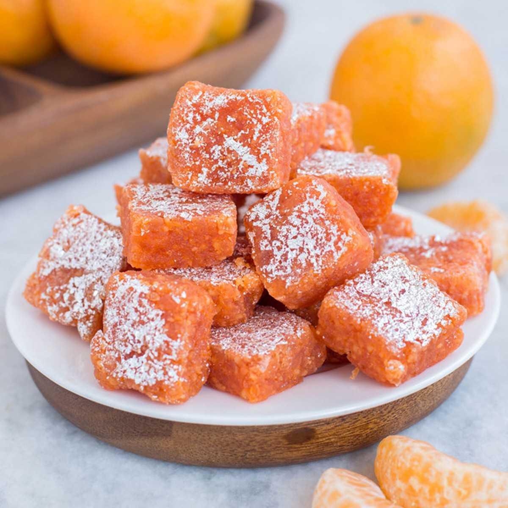

Nagpur is a beautiful city located in the central part of India in the state of Maharashtra. Also known as the orange city, it is the winter capital and is the 3rd largest city of Maharashtra after Mumbai and Pune and ranks 13th in India in terms of population. It offers a great variety of Nagpur street food dishes which mostly render an assortment of spicy food. Apart from being a great tourist spot, Nagpur is widely known for its tasty conglomeration of street food.
It has some great dishes which might not be exquisite but its taste would surely act as a conundrum for even the biggest connoisseur.
1. SAMOSA
This article featuring Nagpur's street food would be null and void if samosa doesn't top its list. This spicy street snack is a common sight throughout the country but what makes the Nagpuri samosa (as it is popularly called) stand out amongst the rest is its medley of condiments used to camouflage its flavour and give out an exquisite and delightful taste. Samosa is a spicy Indian snack which has a replete of mashed potato along with green peas, finely chopped coriander and an assortment of robust Indian spices. It is served with tangy tamarind or pudina chutney.
Where: Samosawala, Vayusena Nagar You could also try Chhola Samosa at Samosawala located near Bada Hanuman temple.
2. POHA

Just as a trip to Kolkata would be incomplete without a plate of Rasogolla or as it is renowned in Bengal as "rosogolla", likewise a trip to Nagpur would be incomplete without a plate of the iconic Nagpur street food i.e. Poha. Poha is a staple breakfast for Nagpur, and this savoury is best enjoyed with pouring tarri on it. Poha is a dish made from an array of flattened rich, finely chopped onions, tomatoes, diced potatoes and curry leaves. Lemon juice is used for garnishing this fine savoury.
Where: Ramji-Shyamji Pohewala located in Sita Nagar which is considered as the finest in Nagpur. For the scrumptious aloo poha poured with spicy tarri, head over to Rupam Sakhare's stall in Kasturchand Park.
3. Saoji Delicacies
The Saoji food is a must try in Nagpur. Robust Indian spices mixed with paya and chicken make up this dish. This dish can be tried at various shacks or bhojnalayas in and around Nagpur.
Where: Saoji Jagdish Bhojnalaya, Gandhibagh
4. Matka Biryani
A trip to any city would be incomplete without tasting its biryani. Every city has a different story to tell when it comes to Biryani. Nagpur serves one of the finest biryanis in the country. Every small restaurant, shack or small food stalls offer this delectable Nagpur street food.
Where: For the best biryani experience head over to Babbu Biryani Centre.
5. Pani Puri
This crispy and crunchy street food in Nagpur is a favourite amongst million. The moment a Pani Puri stall is located by our eyes, our stomach sends a strong signal to our brain, and our feet can be seen moving in the direction of the stall. The city serves the most ambrosial pani puris in the country. This snack is made by inserting mashed potatoes with salt, pepper, chilli and finely chopped onions (varies from city to city) into the puri. It is eaten by dipping these puris in either tangy tamarind water or cold pudina water.
Where: Bombay Chaat Centre, Pratap Nagar
6. Paan
Paan is often used to bring out the best in your meal. It is had after dessert and indulges your taste buds in a wide array of flavours and helps reciprocate the perfect taste of your food. Paan is a must try if you are visiting Nagpur. Right from regular Paan to strawberry Paan, whatever your heart desires, it is fulfilled with the street food if Nagpur.
Where: Sunita Pan and Juice, Dhantoli
7. Jalebi
Jalebi is a sweet delicacy which is a very popular dessert. This hot and sweet savoury is enjoyed by all alike. It is prepared by making a fermented batter which is dipped in a sugary syrup and is a sticky and spiral dessert which rules the heart of many.
Where: Haryana Special Jalebi, Dobi Nagar
8. Sheermal and Rott
Hafeez bakery has been in service since the last 20 century, and it has served a large generation of people with its delicious biscuits, bread and other baked items. Sheermal is a saffron coloured bread whereas rott is nothing but a large biscuit. It is enjoyed by both young and old alike and is a very popular street food in Nagpur. You must have this on your next trip to Nagpur.
Where: Hafeez Bakery Mohammad Ali Rd, Mominpura
9. Patodi and Kadhi
A trip to Nagpur is incomplete with tasting its Maharashtrian dishes like bhakar, patodi etc. There is no point in visiting Nagpur if you don't get a taste of gourmet Maharashtrian cuisine. Patodi and kadhi is a widely popular Maharashtrian Besan curry. This curry is served in a spicy gravy and is eaten with roti or bhakri. It is a must try Maharashtrian dish which offers you the true taste of Nagpur with its assortment of spices.
Where: Patodiwala's Joint, Near Nagpur Tehsil Officer
10. Tandoori Chicken
A non - vegetarian meal is incomplete without Tandoori chicken. If your connoisseur's heart loves the taste of a miscellany of spices, then this dish in Joey's word is your Everest! If you want to get a bite of the spiciest and juiciest Tandoori chicken, then this street food in Nagpur is perfect for you! This dish is served red hot along with an array of chutneys to choose from.
Where: Hyderabad Tandoori Chicken, Chandni Chowk
11. Santra Barfi
xThis dessert is orange in colour hence the name. Santra burfi is a kind of fudge and is readily available in most of the sweet shops in Nagpur. Also known as Orange barfi, it is the trademark delicacy of Haldiram. It is a creamy, tangy and oranges sweet. It's the best pick for the sweet tooth.
Where: Shree Heera Sweets in Itwari
Comments (4)
Carmen Vegas
18 Sep 2020THANK YOU SO MUCH SAOJI WAS THE BEST ONE FROM ALL THOSE
Reply